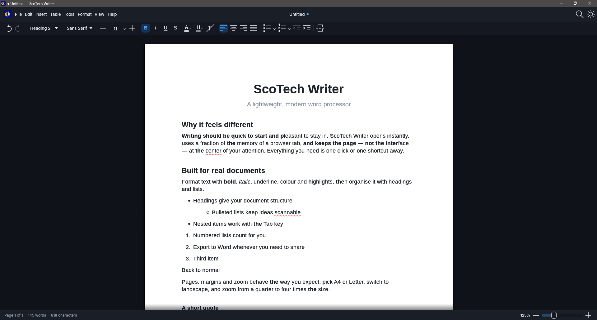
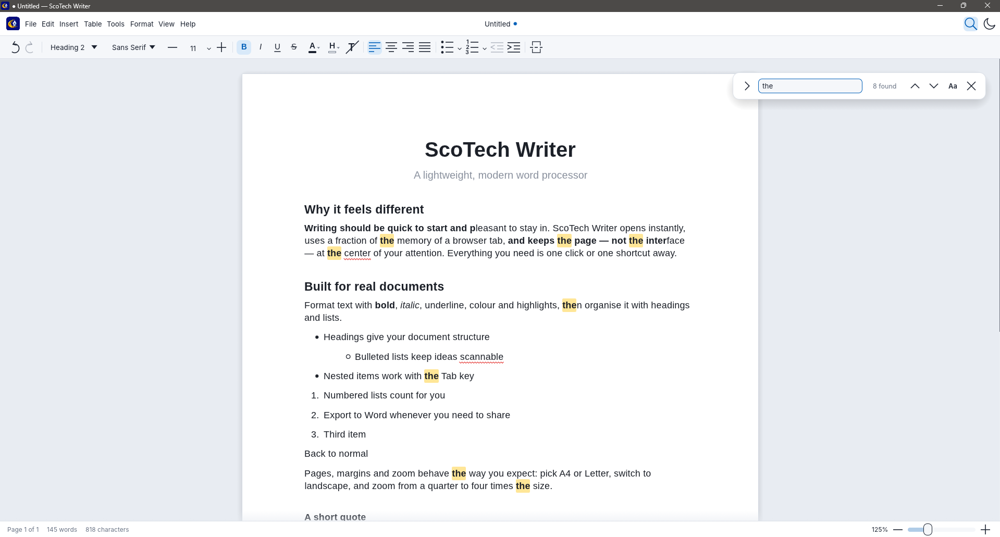
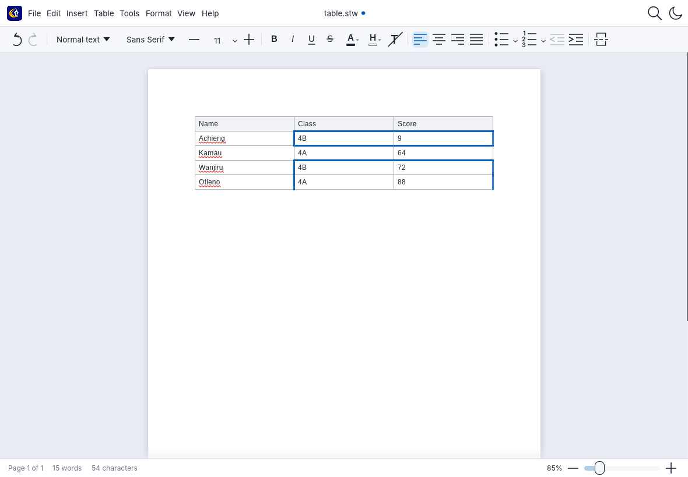
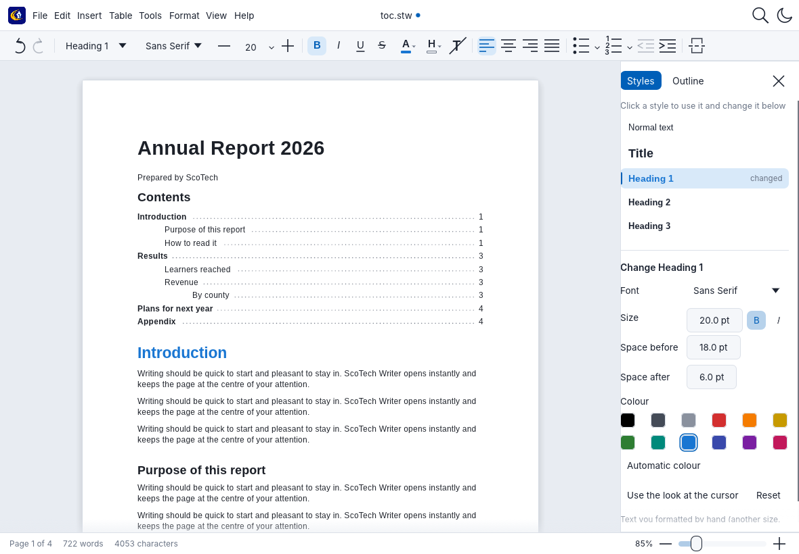
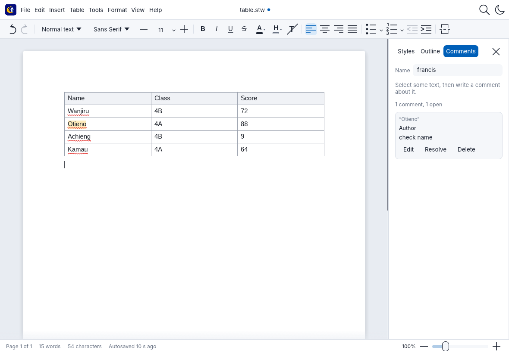

Real pages
A4, A5, Letter and Legal, margins, page breaks, headers, footers and footnotes. What you see is what prints.
Free for Windows · Made in Kenya
A fast, modern word processor that starts instantly, opens your Word documents and keeps the page — not the interface — at the centre of your attention.

The tools you reach for every day, without the clutter.
A4, A5, Letter and Legal, margins, page breaks, headers, footers and footnotes. What you see is what prints.
Merged cells, shading, borders, row heights you can drag, sorting, repeating header rows and one-click table selection.
Insert images, wrap text, crop and layer them. Adjust brightness, colour and effects. Add text boxes and shapes.
Comments with replies, and Track changes with accept and reject, saved the way Word expects.
British and American English, plus Kiswahili. Misspellings are underlined as you type.
Headings, an automatic table of contents, an Outline view and a Styles panel in the side bar.
Export a PDF in a moment, even for long documents, or print straight from the app.
Background autosave and recovery after a crash. Your original Word file is never overwritten.
A calm Digital Blue theme in light or dark. The page itself always stays white.




Free to download and use.
Download for WindowsNew apps from small publishers are flagged until enough people have installed them. It does not mean anything is wrong. Click More info, then Run anyway.
Checksum (SHA-256):
Yes. There is no subscription, no account and no advertising.
Yes. It opens .docx (including comments, tables and contents) and saves a copy, so your original is never overwritten. It also saves its own .stw format and exports .docx, PDF and plain text. Very heavily designed pages can still look a little different from Word.
The installer is for Windows 10 and 11. The code is cross-platform, but only Windows is supported for now.
No. It works fully offline and does not send your documents anywhere.
Email info.scotech.ke@gmail.com with what you saw. Screenshots help.